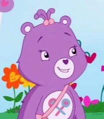
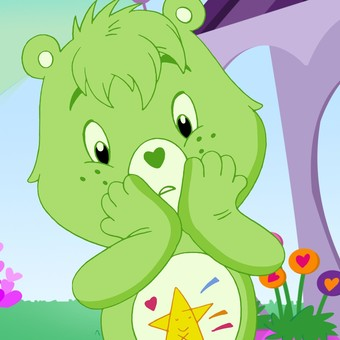
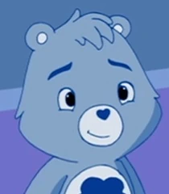
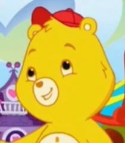

|
AlegrositaEs optimista, extrovertida e inteligente. Aunque es muy varonil, es un personaje maternal para los otros Ositos Cariñositos. Es de color rosa y su insignia (imagen que la mayor parte de los personajes llevan en su vientre y la otorga poderes especiales) consiste en un arcoíris de colores. |
|  | GenerositaTiene una actitud inocente, ingenua y es un poco "cabeza hueca". Cultiva flores en su jardín, y siempre lleva una bolsa llena de caramelos para compartir con sus amigos y compañeros. Es de color morado y su insignia consiste de dos paletas cruzadas como una X. |
|  | RevoltositoEs torpe y propenso a los accidentes. Es de color verde amarillento y, a diferencia de los restantes Ositos Cariñositos carece de insignia, por lo que en general se dibuja en el vientre una imagen acorde a sus sentimientos. |
|  | GruñositoEs cínico, amargo aunque justo. Es un inventor y responsable de la creación de artilugios y aparatos destinados a hacer más fácil la vida de los osos, aunque algunos de sus aparatos son absolutamente sin sentido. Cada vez que Revoltosito provoca accidentes que los dañan a el o a su propiedad, pronuncia frases como "¡Nubes tormentosas!" y "¡Tuercas retorcidas!". Es de color azul y su insignia es una nube con gotas de lluvia en formas de corazones. |
|  | DivertositoEs decidido y activo. Una vez que se engancha con una idea, rara vez la deja ir (como se ve en los episodios de "Cuidadosito" y "Rainshine Meadows"). Es poco presumido, lo que a veces lo mete en problemas. LLeva también una gorra roja de beisbol. |